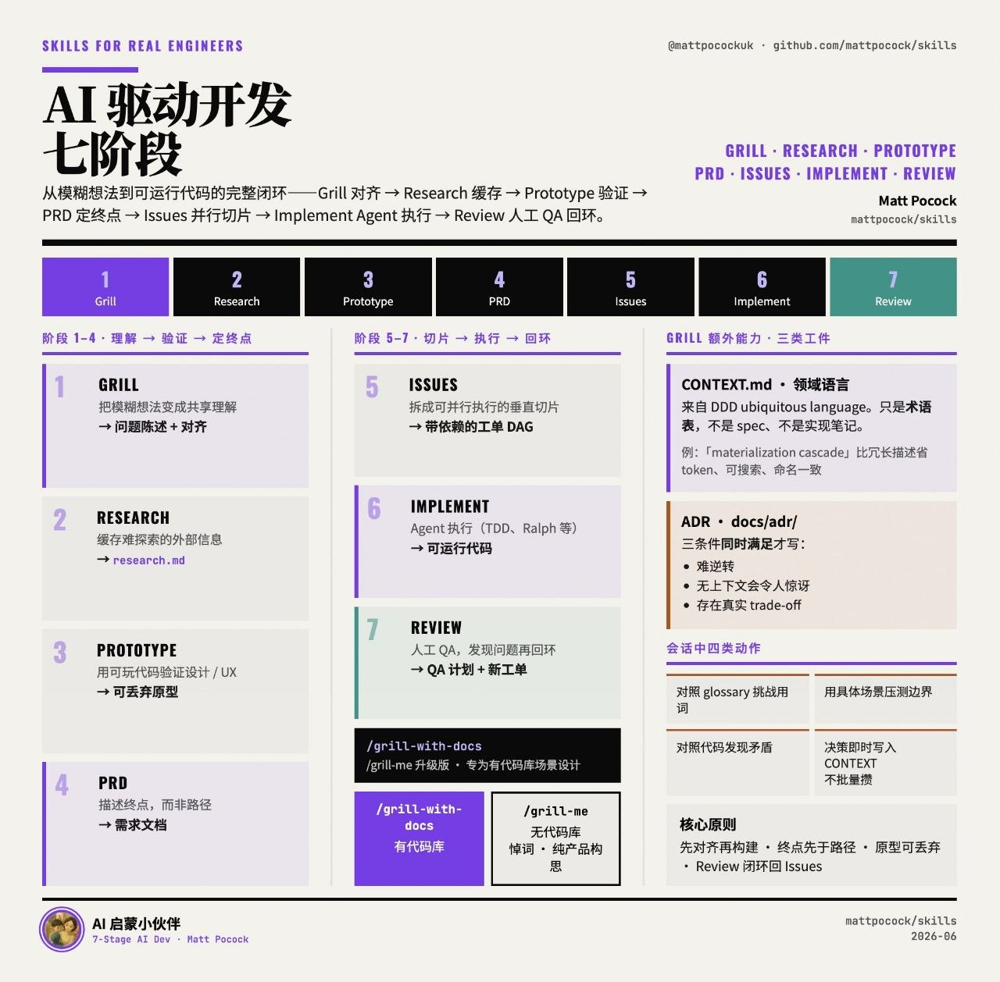

旧版只覆盖了七阶段和少量工程技能，缺少最新 README 里的完整技能矩阵，也没有把 /teach 作为独立能力层讲清楚。
本次补全
- 按最新仓库统计：25 个 active skills，另有 deprecated 与 in-progress 分区。
- 补充
/teach：MISSION、RESOURCES、lessons、reference、learning-records、NOTES。 - 把用户给的“AI 驱动开发七阶段”图作为内容证据嵌入。
- 补齐 setup、triage、diagnose、zoom-out、architecture、review、writing 系列。

Grill
把模糊想法变成共享理解。持续追问，直到问题、边界、取舍都被说清楚。
Research
缓存难探索的外部信息，避免每轮都重新搜、重新解释上下文。
Prototype
用可玩的代码验证状态机、业务逻辑或 UI/UX 方向，不承诺长期维护。
PRD
描述终点而非路径；用户故事、测试决策、范围外事项都要写清。
Issues
把 PRD 切成可并行执行的垂直切片，显式标注依赖、HITL/AFK。
Implement
Agent 执行；用 TDD、diagnose、zoom-out 和架构技能约束实现质量。
Review
人工 QA 与双轴审查：Standards 是否守住，Spec 是否真的满足。
/grill-with-docs
面向已有代码库的盘问会话。它会先读代码和文档，挑战术语、边界和决策，不把用户每句话都当事实。
CONTEXT.md
领域语言，不是 spec、不是实现笔记。它要把“account / customer / user”这类词压成唯一命名，让代码、测试、Issue 使用同一种语言。
docs/adr/
只有同时满足三条才写 ADR：难逆转、无上下文会令人惊讶、存在真实 trade-off。否则不要把日常讨论塞进 ADR。
setup-matt-pocock-skillsbootstrap为 repo 建立 Agent skills 配置：issue tracker、triage label vocabulary、domain docs layout。其他工程技能依赖它。
to-prdendpoint不再追问用户，而是把当前上下文合成为 PRD：Problem、Solution、User Stories、Implementation / Testing Decisions、Out of Scope。
to-issuesDAG把计划或 PRD 切成 tracer-bullet 垂直切片；每个 slice 都能端到端验证，标注 HITL/AFK 和依赖关系。
tddred-green一轮一个行为：写一个失败测试，再写最小实现。明确反对“先写所有测试再写所有代码”的水平切片。
diagnosedebug硬 bug / 性能退化的纪律化诊断：reproduce → minimise → hypothesise → instrument → fix → regression-test。
improve-codebase-architectureentropy结合 CONTEXT.md 与 ADR，寻找 deep modules、耦合收缩、测试性改善机会，用来对抗 agent 加速制造泥球。
prototypethrowaway为设计/状态机/UX 做可丢弃原型：终端可运行 demo 或多个 UI 变体，而不是直接进入生产代码。
zoom-outcontext让 Agent 从局部代码抬头，解释当前模块在整个系统里的位置，避免只会在当前文件里打补丁。
triagestate machine用 triage role state machine 管理 issue，区分 bug、feature、ready-for-agent 等状态。
reviewin-progress按固定点审查 diff，双轴输出：Standards 是否符合仓库规范，Spec 是否满足原始 issue / PRD。
/teach 是旧卡遗漏的关键能力：它不是一次性解释，而是把当前目录变成可持续学习工作区，用文件记录使命、资源、课程、参考文档和学习记录。
MISSION.md记录用户为什么学这个主题。每节课都必须贴合 mission，否则知识会漂。
RESOURCES.md高质量资源列表；在资源不足时，先找资料，不相信模型参数记忆。
lessons/*.html单节、短小、漂亮、可复习的 HTML 课程；每节只给一个可获得的胜利。
reference/*.html压缩后的速查材料：算法、语法、流程图、glossary，通常比 lesson 更常被复看。
learning-records/*.md类似 ADR 的学习记录，保存非显然洞见，用来判断近侧发展区。
NOTES.md记录教学偏好和工作笔记，让后续课程保持个人化。
Engineering · 10
Productivity · 5
Writing / Personal / Misc
为什么这套流程抗“vibe coding”
- 先用 Grill 对齐真实需求，再让 Agent 写代码。
- 用 CONTEXT / ADR 把隐性语言和决策写成外部记忆。
- 用 Issues DAG 控制并行粒度，避免超大任务一次性爆炸。
- 用 TDD、diagnose、review 把反馈回路压短。
什么时候用哪一个
- 新想法：
/grill-me→ Prototype → PRD。 - 已有代码库：
/grill-with-docs→ CONTEXT / ADR → PRD。 - 执行阶段：
/to-issues→/tdd//diagnose。 - 学习阶段：
/teach建立 stateful learning workspace。